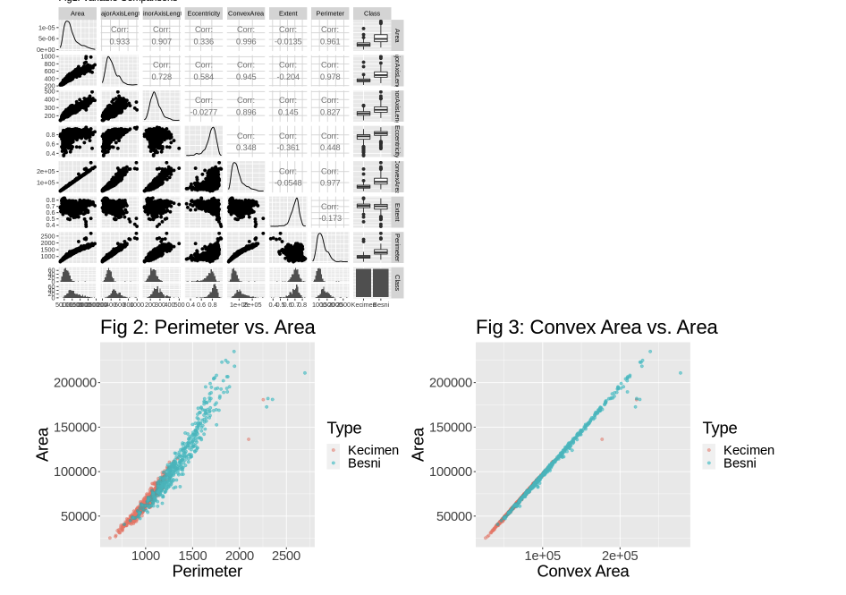

Machine Learning Raisin Identifyer
Welcome to our groundbreaking project developed in R, where we leverage the power of k-nearest neighbors (KNN) classification to accurately identify different types of raisins based on their physical dimensions. This exceptional project, with an impressive 88% accuracy rate, showcases the capabilities of a dedicated university student in the field of data analysis and machine learning. Our R-based raisin classifier utilizes the KNN algorithm, a popular and effective approach for pattern recognition tasks. By analyzing the physical dimensions of raisins, such as size, shape, and texture, our classifier accurately categorizes them into specific types. This innovative solution brings automation and efficiency to raisin classification, benefiting industries such as agriculture, food processing, and quality control.